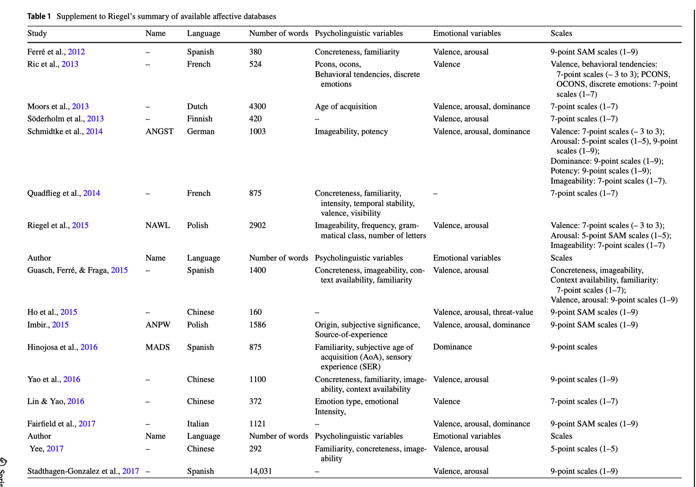
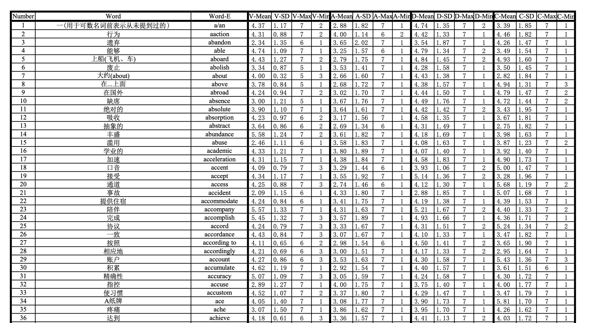
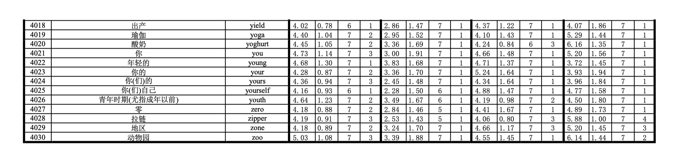

Ying, Lv, Ye Ruyang, Ni Chuanbin, Wang Yeqing, Liu Qing, Zhou Yufan, and Gao Fei. “ANCW: Affective norms for 4030 Chinese words.” Behavior Research Methods (2023): 1-16.
一、摘要
单词中包含的情感信息越来越受到世界各地神经语言学家和心理语言学家的关注。本研究建立了情感词典ANCW(Affective Norms for Chinese Words)，对 4030 个词语进行了效价valence、唤醒度arousal、主导度dominance和具体性concreteness 打分，这些词语是根据 CET-4（国家大学英语四级考试）官方大纲进行中文改编的。尽管现有的中文情感词典CAWS(Chinese Affective Words System)，ANCW 提供了更多、更丰富的中文词汇。通过在程序中使用 7 级李克特量表（范围从 1 到 7），我们获得了 3717 名中国本科生对所有变量的评分。词典ANCW具有良好的响应信度，并且与中文先前的规范研究相兼容。成对相关分析揭示了效价与唤醒、唤醒与支配性以及效价与具体性之间的二次关系。此外，效价和支配性、唤醒性和具体性均呈现线性相关，具体性和支配性相关。ANCW 为涉及情感语言处理的进一步研究提供可靠且标准化的刺激材料。
二、文献梳理
语言和情感是人类生活不可分割的一部分。在过去的二十年里，词语的情感评级受到了极大的关注。研究人员建立了许多标准化数据库，从不同维度对不同语言的单词进行评级。传统上，情感的概念是情感观，被视为多个维度的连续体（Ćoso et al., 2019；Rubin & Talarico, 2009），所有情感都具有两个或三个维度的特征（Duffy, 1934)；奥斯古德等人，1957）。根据卡罗尔、奥斯古德、苏西和坦南鲍姆（ 1959）的情感理论，对词语进行了大量的情感评级，
- 效价valence 是指令人愉快的程度，范围从不愉快到愉快；
- 唤醒度arousal 是生理激活程度的指标，范围从平静到兴奋；
- 支配性dominance 描述了个人所感受到的控制程度，从失控到受控。近年来，心理语言学变量具体性的研究引起了人们的浓厚兴趣。
根据 Gilhooly 和 Logie（1980）的观点，
- 具体性concreteness 代表了形成单词心理形象的难度程度，范围从抽象（难以形成）到具体（易于形成）。
构建具有单词情感评级的数据库的需求很大，因为它们至少有助于四个方面的研究，包括针对情绪本身的研究、情绪特征对单词处理和记忆的影响、整个消息表达的情绪或文本，以及通过将新词与已验证词进行比较来了解新词的情感价值（有关评论，请参阅 Warriner 等人，2013 年）。到目前为止，已经用多种语言构建了各种数据库，并为进一步的研究提供了丰富的刺激和可靠测量的情绪特征。

从上述文献中，我们可以看到针对不同语言建立了各种各样的包含情感评级的数据库，以满足日益增长的情感研究需求。然而，据我们所知，该领域还存在一些有待进一步研究的地方：
- 大多数数据库是由西方国家建立的，并且已经证实，一些研究发现情感评级因文化而异。因此，建立中国本土情感规范数据库迫在眉睫。
- 国内以往的研究在制定标准化的情绪刺激上付出了很大的努力，并且使用了多样化的刺激。在这些刺激中，言语刺激可以得到更严格的控制，并且与其他刺激具有可比性，例如需要在复杂性、亮度、颜色和对比度上进行控制的图片(Soares et al., 2012 )。
- 最重要的是，以往的研究限制了汉字的数量。例如，AANC（Liu et al., 2021）由四个汉字单词组成，而Yao等人建立的另一个数据库则由四个汉字组成。( 2016)仅包含两个字符的单词。众所周知，汉字非常复杂。例如，一个汉字可以组成一个词，如“书”、“美”、“杀”。两个或多个汉字也可以组成一个词，如“生活”、“白日梦”、“色彩斑美丽”。特别是，日常使用的词语非常灵活，不仅限于二字词或四字词。在这种情况下，汉字数量的限制在一定程度上限制了表达的丰富性和灵活性。
鉴于这些局限性，本研究旨在建立一个标准化、多维、不限制字数的汉语词语情感规范数据库。此外，本研究将采用多种方法检验ANCW的可靠性，为进一步研究情感和心理语言变量之间的关系提供更多证据。总体而言，本研究在一定程度上弥补了上述局限性。
三、 方法
3.1 参与者
共有 3717 名母语为中文的人参与了这项研究。所有参与者均为中国 41 所大学除英语专业以外的其他专业本科生（女性 2346 名，男性 1258 名，无性别信息 113 名；M年龄= 19.91，范围 16-25，SD = 1.21）。
3.2 确定词语列表
从英语四级CET-4的教学大纲中找出4030个英语单词，大学英语四级大纲中的词汇出现频率较高，且与学员的日常生活密切相关。
翻译经过三道严格的程序完成。第一轮翻译依据的是牛津高阶英汉词典（第9版 *）*和英国国家语料库（BNC）。该研究采用《牛津高级英汉词典（第9版 *）》*中的首个中文释义，将词表翻译成中文。有些词有多个词性。例如，“stem”可以是名词和动词。名词“茎”的意思是“植物在地面上长出叶子或花朵的主要长而薄的部分；从中生长出来并支撑花朵或叶子的较小部分”（Stem，2018），动词的意思是“阻止某些正在流动或增加的东西”（Stem，2018）。在本例中，我们根据英国国家语料库选择了词频较高的词性。在此过程之后，研究发现了 672 个单词的一致翻译。
在第二个翻译阶段，本研究采用了德尔菲法。我们邀请了五位精通英语文化和中国文化的专业翻译人员来进行这项工作。翻译过程中，五位专业人士未经讨论就翻译了这672个一致词。然后，研究对他们的翻译进行了比较，并找出了五位译者意见不一致的词语。经过四轮匿名讨论，我们获得了唯一不重复的汉译本553个单词。
经过这一步，剩下了 186 个与中文翻译一致的单词。为了确保每个翻译不重复，研究在中文翻译后标记了原始英文单词或该单词的词性。最终获得了英语四级英语单词大纲的翻译版，包含4030个中文单词。
我们将 4030 个中文单词的列表随机分为 20 个子列表，每个子列表包含 201 或 202 个单词。根据该研究的设计，每个单词的每个维度（唤醒度、效价、支配性和具体性）都会被评估至少 45 次。
3.3 设计问卷
每份试卷均包含一个信息部分、说明和评分表。本研究采用7点李克特自评量表进行打分。
- 效价描述了刺激引起愉悦感的程度（Russell，1980；Bradley & Lang，1999）。数字1表示非常不愉快，4表示一般，7表示非常愉快。
- 唤醒，也称为激活、强度或能量水平（Montefinese 等，2014），用于描述身体被激活或唤醒的程度（Duffy，1934）。该研究用1表示极度平静，4表示中性，7表示极度兴奋。
- 支配性被定义为个体对刺激的控制或影响程度，范围从完全失控到完全控制（Russell & Mehrabian，1977）。研究用1代表受试者感觉自己完全被这个词控制（这个词是“盛行”），4代表中立，7代表受试者感觉能够完全控制这个词（这个词是“弱”）。 ”）。
- 具体性是指形成单词物理所指的心理图像的困难程度。该研究使用1表示极端抽象，4表示中性，7表示极端具体。
3.4 步骤
本研究采用纸笔评分法(paper-pencil rating method) 。每个参与者随机收到一个单词子列表。在试卷的第一页，该研究为每个维度（效价、唤醒度、支配性和具体性）提供了清晰的中文说明和生动的例子。参与者收到试卷后，研究口头提供了清晰的说明解释。试卷的第二页和第三页是A4纸上打印的中文单词和等级量表。每个参与者在安静的教室里对一张试卷进行评分。由于所有单词都是汉语，而且四级单词在社会生活中广泛使用，因此没有参与者对单词的含义有疑问。
鉴于之前的研究（谢，2020；张，2020），数据修剪规则如下所示，如果试卷满足其中一条规则，则将被视为无效。
- 70%以上的评级结果缺失；
- 70%以上的评级结果相同；
- 试卷表现出明显的敌意。例如，一些参与者在试卷上留下侮辱性的评论，例如“我只是随意圈出数字来欺骗你们，傻瓜”。
- 此外，答案是在一系列之字形中随机选择的。在这种情况下，调查问卷将被视为敌对调查问卷。
最终我们共收集到3304份试卷。在所有试卷中，效价评分为 858 份，唤醒评分为 803 份，支配性评分为 777 份，具体性评分为 866 份。每个维度中的几个缺失评级均由平均值代替。删除无效数据后的最终数据库共包含4030个单词，每个单词的效价评分为42.9，唤醒评分为40.2，具体性评分为43.3，支配性评分为38.9。
四、ANCW词典
ancw下载链接:https://pan.baidu.com/s/1UfbmVQh9XM77eoGmMsZ2-w?pwd=bp63 提取码:bp63


相关文献
Xu, X., Li, J., & Chen, H. (2021). Valence and arousal ratings for 11,310 simplified Chinese words. Behavior Research Methods, 54(1), 26–41. https://doi.org/10.3758/s13428-021-01607-4
Yao, Z., Wu, J., Zhang, Y., & Wang, Z. (2016). Norms of valence, arousal, concreteness, familiarity, imageability, and context availability for 1,100 Chinese words. Behavior Research Methods, 49(4), 1374–1385. https://doi.org/10.3758/s13428-016-0793-2
Yuan, J., Zhang, Y., Chen, S., Luo, L., & Ru, Y. (2021). The establishment of Chinese Emotion Regulation Word System (CERWS) and its pilot test. Acta Psychologica Sinica, 53(5), 445. https://doi.org/10.3724/sp.j.1041.2021.00445